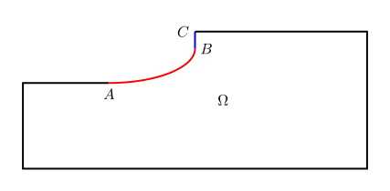
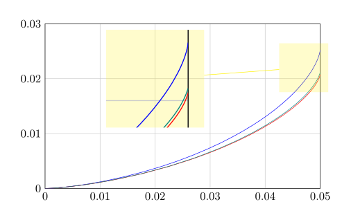
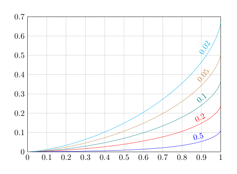

圆轴是非常常见的机械零件，通常是由不同直径的轴段组成。直径变化的台阶处会产生应力集中，一般通过圆弧过渡缓解。常见结构的应力集中系数可以在《应力集中系数手册》[1]之类的参考书中查到。现在有限元计算已经很普及，计算机的速度也很快，直接做数值计算也不是难事。如果按之前的文章《圆轴的有限元分析》中的方法，充分利用问题的轴对称性，求解可以在很短的时间内完成。
既然单次计算已很便捷，我们可以来解决需要多次计算的问题。本文尝试通过迭代计算找到何种过渡曲线是最优的。采用的方法虽然出现得很早，但还没见到在圆轴应力集中这一常见问题上，通过充分计算真正找到“最优”结果。得到的最优过渡曲线较之常规的圆弧过渡有一定提升，但也可看出圆弧的效果已相当好。后面又尝试了用简单的曲线近似，能比较方便地达到接近最优的结果。本人能力有限，主要是提供一些思路，供感兴趣者一阅。
基本思路
上图表示的是两段不同直径的轴，之间有某种曲线过渡。粗略地来说，在一定的载荷下，较细部分的应力当然比较粗部分的应力更大，而应力集中（Stress Concentration）是指，过渡部分的应力会比较细部分的应力更大。应力集中系数（Stress Concentration Factor）就是过渡部分的最大应力与较细部分的应力的比值。这里的所说的应力应根据强度准则选取，可以是最大正应力、最大剪应力或是冯·米塞斯应力。
本文的目标是尽量降低最大的应力值。在本文处理的几种情形中，最大应力只会出现在区域的边界，而不是内部，也就是最大应力只会出现在曲线$\overgroup{AB}$上。最小化应力的方法虽不是那么直观，却也很简单，就是使得应力在$\overgroup{AB}$上全部相等。这个方法在上个世纪早期就已提出[2]，可以说是关于这一问题最早的思路。虽然这个方法在实践中有效果，但还没有办法从理论上说明这个方法确实能优化这一问题，所以后面出现的文章大多是从其他方向着手。这个问题是要“最小化最大值”，或者说是对无穷范数做优化。从数学上看，至少目标函数不可微，理论上确实有难度，突破的方向目前还不明确。
使应力在过渡曲线上相等的方法也很简单直接：如果某处的应力较大，可以认为此处偏细，应该将直径增大，如果应力较小则相反，重复这一过程，直到应力全部相等。这种改变形状的简单策略，并非经过形状微分（Shape Derivative）之类的数学工具推导，但在实践中仍有较好的效果。
具体实现
本文使用前面提到的文章中的方法，在扭转、拉伸、弯曲三种载荷状况下，使用最简单的线弹性模型，将对圆轴的应力分析转为二维问题，计算应力集中系数。使用的有限元计算工具是开源的FreeFEM。在扭转载荷下分析的是最大剪应力，拉伸和弯曲载荷下分析的是最大正应力。扭转的应力集中系数与材料性质无关，而拉伸、弯曲的应力集中系数与泊松比相关，泊松比增大，应力集中系数降低，但变化率并不大。本文按泊松比0.3计算，但结果对泊松比在此值附近的材料也有一定的泛用性。
通过有限元计算得到应力值后，设$\overgroup{AB}$上某个点的应力为$\sigma$，径向坐标为$y$，受[3]启发，可以按下式移动坐标 $$ y^*=y+c(\sigma-\sigma_\mathrm{r}) $$ 其中$\sigma_\mathrm{r}$是参考应力，用来判定应力究竟是偏大还是偏小，系数$c$用来控制节点移动速度。移动速度低，收敛慢，但速度太高则可能不收敛。参考应力$\sigma_\mathrm{r}$可以取为$\overgroup{AB}$上应力的平均值，这样各点的应力逐渐趋向于平均值，最终达至相等。这个想法虽然直观，但实践中发现有时会使结果不收敛。[3]中推荐将$\sigma_\mathrm{r}$取为最大应力。本文采用的方法是将$\sigma_\mathrm{r}$取为$A$点的应力。因为在改变曲线的过程中，$A$点是不移动的，采用该点的应力为参考，可避免曲线演化为某些不收敛的情形。
在FreeFEM中直接操作某个特定节点位置有困难。软件推荐的movemesh函数是根据定义在整个域上的场来移动节点。尝试变通的方法后，又发现其他的点都可较好地收敛，就是$B$点存在问题。达到本文要求的理想状态后，应力在$\overgroup{AB}$上相等，而过了$B$点应力会急速下降。由于在有限元计算中，节点的应力由相邻单元的应力插值而来，所以$B$点的应力会小于曲线上的其他点。按照前面的公式，$B$点坐标仍需要移动，移动一下又会使应力偏大，难以收敛。[3]应该也会遇到这个问题，包括合作者的其他文章，如[4]。文章不可能刊载全部实现细节，不过这里确实让本人卡住很久。
这个问题促生出一个想法，不是直接按照应力的偏差移动节点，而是以其定义某种“力”，由力推动节点移动。本文修改曲线只需要$y$方向位移$u_y$，如使用平面弹性模型来处理，$x$方向位移就是冗余，所以这里使用更为简单的拉普拉斯方程。可以用传热问题来理解，将$u_y$视为温度，需要在下图所示的区域$\Omega$中求解。在边界$\overgroup{AB}$上有热量的传入和传出，边界条件为 $$ \frac{\partial u_y}{\partial \mathbf{n}}=c(\sigma-\sigma_\mathrm{r}) $$ $u_y$在边界$\overgroup{ABC}$上是自由的，在其他边界则固定为0。

将有限元的试函数记为$v_y$，这个问题的弱形式方程为
$$
\int_{\Omega} \nabla u_y \cdot \nabla v_y \mathrm{d}\Omega=\int_{\overgroup{AB}} c(\sigma-\sigma_\mathrm{r}) v_y \mathrm{d}s
$$
求得$u_y$后，便可用函数movemesh来移动网格。
采用这个方法还有另一个好处，就是能更好地适应疏密不等的网格。因为这样由应力的偏差计算得到的移动量会随单元尺寸的减小而减小，不容易因为移动量过大产生扭曲的网格。于是，这个方法可以更好地和自适应网格函数adaptmesh相结合，得到高精度的结果。
数值计算得到的结果，并不能做到精确相等。本文以最大应力与$\overgroup{AB}$上的平均应力的差值小于某个给定的值来判定收敛。此时可能靠近$B$点还有一小段曲线应力明显小于其他部分，但对最大应力的影响已很有限。除了系数$c$，还有其他因素会影响结果的收敛。个人的一点体会是，较之以圆弧作为初始形状，将$A$、$B$两点之间直接以直线段相连、初始的$b$值取得较大、让模型逐渐收缩比较容易收敛。但有时参数改变一点就不收敛，还是有玄学成分。
本文所用的方法，是可以推广到其他一些形状优化问题上的，但是在收敛性方面还待完善。还有与之相关的一点可以补充，本文和[3][4]的相比，除了不直接移动节点，还有一个重要不同：他们是沿边的法向移动，而本文是直接沿$y$向移动。要将边的法向纳入考虑也很简单，将法向量的$y$分量$n_y$加入前面的公式，变成$\frac{c}{\lvert n_y \rvert}(\sigma-\sigma_\mathrm{r})$便可。对于扭转载荷的情形，加此系数后收敛一般更快，在$B$点附近的应力均一性更好，但对总的结果影响很微小。后面的计算中用了此更改。可是对于拉伸和弯曲载荷的情形，改后效果不明显，甚至反而不利于收敛。接下来会看到三种载荷下得到曲线在$B$点处形状上的差异，这里的区别可能与之有关。当然，本文关于后面两种载荷的例子很少，这里可能是未见全貌。
三种载荷下的最优过渡曲线
扭转、拉伸、弯曲三种载荷状况下，最优过渡曲线各不相同。下图是$D/d=1.2$和$a/d=0.05$时的三条相应曲线，蓝色为扭转，红色为拉伸，青绿色为弯曲，最右端的部分做了局部放大。

拉伸和弯曲的两条曲线很接近，而扭转的曲线明显更高。对于单一直径的轴，扭转和弯曲的强度均正比于直径的立方，而拉伸强度正比于直径的平方。前人从此出发，认为扭转和弯曲的最优过渡曲线应该相近[2][5]。从本文的计算看，实际情况并非如此。
三条曲线在左端均与水平线相切，而只有扭转的曲线在右端与竖直线相切。这又是一个最优过渡不是光滑过渡的例子，本人另一篇文章中也出现了这样的结果。过渡曲线出现这样的尖点可以在某种载荷状况下将结果推到极致，但如果遇到其他的载荷状况则可能引发更强的应力集中。[4]推荐修改过渡曲线，在尖点处添加较小的圆弧过渡，使结果更为“稳健”。
下表列出了三条最优曲线在三种载荷状况下的应力集中系数，又将它们与半径为$a$的圆弧过渡相比较。
| 应力集中系数 | 圆弧 | 扭转最优 | 弯曲最优 | 拉伸最优 |
|---|---|---|---|---|
| 扭转 | 1.53 | 1.40 | 1.83 | 1.78 |
| 弯曲 | 2.09 | 1.81 | 1.75 | 1.81 |
| 拉伸 | 2.31 | 2.00 | 1.93 | 1.92 |
在圆弧过渡下，扭转应力集中系数最小，弯曲的居中，拉伸的最大。相应最优过渡曲线所带来的改善，无论是绝对值还是相对值，也依此顺序增大。在效果最明显的拉伸情况，圆弧过渡的应力集中系数比最优曲线高了20%。
扭转最优曲线对弯曲和拉伸的应力集中系数也有较好的改善效果，但弯曲和拉伸的最优曲线反而会劣化扭转的应力集中系数。前面说到的非光滑过渡可能还不是关键，主要是弯曲和拉伸的最优曲线偏低，在扭转载荷下表现不佳。另外，虽然拉伸和弯曲的两条最优曲线很接近，弯曲的最优曲线对于拉伸也有很好的效果，但相比之下拉伸的最优曲线对于弯曲的效果就较弱，也可说明曲线过低确实对结果不利。
轴实际承受的载荷往往很复杂，可能是上面三种力的混合，还可能有其他未在本文论及的力。可以把多种受力下计算得到的应力加到一起，再根据冯·米塞斯应力设计过渡曲线。不过很多时候各种受力的比例并不确定，不可能精确地计算，此时可以考虑选取一种“稳健”的过渡曲线。针对扭转得到的最优曲线对弯曲和拉伸受力也有较好的效果，也没有弯曲和拉伸的最优曲线的尖点问题，比较适合作为稳健的选择。后面还会看到，这条曲线可以用简单的函数近似。还有一条次要的理由，扭转受力计算量最小。下面就对扭转最优过渡曲线做更详细的分析。
扭转最优过渡曲线深入分析
下图是扭转载荷下，仍取$D/d=1.2$，但$a/d$取值不同的最优过渡曲线。为了更好地比较，曲线经过放大，使得宽度全部为1。曲线的宽度$a/d$增加，高度$b/d$增大，但变化率逐渐减小。两者的相对值$b/a$则是随$a/d$减小而增大，但不会超过1。

$a/d$定为0.05，改变$D/d$的值，也会得到类似于上图的不同高度的曲线，这里就不给出图，而是在下表列出最优曲线的$b/d$。即使直径差非常小，最优曲线的高度$b$仍然比直径差形成的台阶高度更小。随着直径差的增加，$b$增大，但当直径差比过渡段的尺寸大很多时，变化率变得很小。
| $D/d$ | $b/d$ |
|---|---|
| 1.02 | 0.008 |
| 1.05 | 0.015 |
| 1.1 | 0.021 |
| 1.2 | 0.025 |
| 1.5 | 0.030 |
| 2.0 | 0.031 |
在过渡曲线的研究中，往往会把圆弧作为比较对像。将$D/d=1.2$、$a/d$不同取值下得到的最优过渡曲线的应力集中系数与圆弧过渡相比较，见下表。在宽度相同的情况下，最优过渡曲线大多时候能带来约10%的提升，但宽度很大时，圆弧的应力集中系数已很小，提升也就很有限。在高度相同的情况下，尺寸很小时就有约20%的提升，稍微增大后提升可达40%以上，这时$b/d$的值也只0.05左右。所以在设计过渡时，关键是轴向的尺寸，只要轴向有足够的空间，径向只需很小的空间就可以通过优化设计让应力集中系数降到较低的值。
| $a/d$ | 最优过渡 | 相同宽度的圆弧 | 相同高度的圆弧 |
|---|---|---|---|
| 0.01 | 2.19 | 2.36 | 2.56 |
| 0.02 | 1.79 | 1.92 | 2.16 |
| 0.05 | 1.40 | 1.53 | 1.80 |
| 0.1 | 1.20 | 1.33 | 1.64 |
| 0.2 | 1.07 | 1.17 | 1.54 |
| 0.5 | 1.01 | 1.04 | 1.49 |
| 1 | 1.00 | 1.01 | 1.49 |
这里所用的相同宽度的圆弧过渡，在$a\leq \frac{D-d}{2}$时，是半径为$a$的90°圆弧，$a$更大时，圆弧一端与小直径的边相切、另一端在大直径的边上，见下图。这样的圆弧在$a/d$较大时可以很好地降低应力集中系数，一方面是充分利用了宽度，另一方面是高度受限，弧线变得扁平，更接近最优形状。
由此可以想到，如果对圆弧过渡的宽高比做优化，便可降低应力集中系数。过渡曲线为单一圆弧，调整的高度会使曲线右端与竖直线不再相切。为此可在右端再加一段较小的圆弧，形成双圆弧过渡，如下图。两个半径之间有关系式$r_2=\frac{(a-r_1)^2}{2(b-r_1)}+\frac{b-r_1}{2}+r_1$。以$a/d=0.1$为例，如果取$b/d=0.049$、$r_1/d=0.029$，应力集中系数可降至1.24，离最优过渡也不远，如果和高度相近的单一圆弧相比，提升很明显。

在比较不同过渡曲线时，应该控制过渡段的尺寸。有的文章并没有明确这一点，导致它们的结果变得意义模糊。从本文得到的结果看，如果限制在于轴向尺寸，圆弧过渡的效果与最优过渡相比差距并不大。在前面的弯曲和拉伸载荷的例子中，两者的差距也只是稍大。如果限制在于径向尺寸，通过双圆弧过渡也能获得较好的结果。所以，常规的圆弧过渡已是很好的形式，如果不是追求极致，不必寻求替代。
超椭圆近似
如果一定要追求极致，本文前面的方法虽然思路较为简单直接，但需要很多计算来迭代，最后还可能不收敛，需要费些耐心来寻找最优结果。接下来介绍一种比最优解稍弱，但求解更为方便的曲线。
超椭圆（Superellipse）最早由[5]提出用作过渡曲线，后来继续有其他学者研究。所谓超椭圆，是由以下方程定义 $$ \left(\frac{x}{a}\right)^\frac{2}{n}+\left(\frac{y}{b}\right)^\frac{2}{n}=1 $$ 当$n=1$时，就是通常所说的、圆锥曲线中的椭圆。这样的方程可以调整曲线的宽和高，又可通过改变指数来调整曲线的凹凸程度。把指数写成这样的形式，是为了写参数方程更加方便： $$ x = a\cos^n t \quad y = b\sin^n t $$ 不过前人没有注意，形状类似下图的曲线，可以认为是原点在$O_1$的超椭圆，也可以认为原点是在$O_2$。虽然与通常理解的“椭圆”不一样，但当曲线方程中的指数$\frac{2}{n}<1$时，超椭圆就会是内凹的形状。将前面得到的扭转载荷下的最优曲线的节点用原点在$O_2$的超椭圆拟合，相对误差有时能小到千分之一二。考虑到模型本身的计算精度，这个结果可称得上惊人。当$a/d$的值增大，拟合误差稍稍增加。用原点在$O_1$的超椭圆拟合，效果也比较好，但没有那么出色。
于是，我们可以直接以原点在$O_2$的超椭圆作为过渡曲线，通过优化方法寻找最佳参数，作为近似最优。本问题中，一般固定$a$、$b$中的一个，只有两个参数需要优化，是较为简单的问题。FreeFEM中集成了优化算法库NLopt，其中的算法Sbplx（子空间单纯形法）对此问题效果较好。计算时间一般比前面求最优曲线的方法大为减少，更重要的是实践中还没发现有不收敛的情况。
下表是扭转载荷下$D/d=1.2$、$a/d$不同取值下得到的最优超椭圆过渡的结果。
| $a/d$ | 应力集中系数 | $b/a$ | $n$ |
|---|---|---|---|
| 0.01 | 2.19 | 0.78 | 3.02 |
| 0.02 | 1.79 | 0.67 | 3.03 |
| 0.05 | 1.40 | 0.51 | 3.10 |
| 0.1 | 1.21 | 0.38 | 3.20 |
| 0.2 | 1.08 | 0.25 | 3.38 |
| 0.5 | 1.01 | 0.13 | 4.15 |
与上一张表中最优曲线的应力集中系数相比较，在精度取至小数点后第二位的情况下，很多时候结果看不出差异。另外，本节的方法容易限定$b$值做优化。例如，在$D/d=1.2$、$b/d=0.05$时，应力集中系数可优化至1.07。最优过渡曲线与之相比虽然有微弱的优势，但要多次尝试才能得到结果。
超椭圆过渡的$b/a$当然也是和最优曲线一样随$a/d$减小而增大，而$n$则是减小。再补充一个极端的情况，在$a/d=0.001$时，$b/a=0.95$，$n=3.01$。如果$b=a$而$n=3$，超椭圆方程变为 $$ \left(\frac{x}{a}\right)^\frac{2}{3}+\left(\frac{y}{a}\right)^\frac{2}{3}=1 $$ 这样的曲线称为星形线（Astroid）。
当然，仅是数值算例并不足够说明最优曲线确实会趋向星形线，这里仅对理论上可能的方向略做延伸。扭转载荷下的圆轴所遵循的微分方程可写成如下形式 $$ \frac{\partial}{\partial x}\left(y^3\frac{\partial \psi}{\partial x}\right) + \frac{\partial}{\partial y}\left(y^3\frac{\partial \psi}{\partial y}\right) = 0 $$ 如果过渡段的尺寸极小，$y^3$的变化极小，可视为恒量，从方程中消去，方程变为单纯的拉普拉斯方程。方程的解被称为调和函数，在数学上已有很多研究，但这些已在本人能力之外。
结语
有人能看到这里？那就写两句。本文的方法在收敛上还不稳定，全靠现在计算机算力够强，反复尝试，得到的结果和圆弧相比也没有超出很多。后面尝试超椭圆时，换用另一个原点其实是算式写错、偶然间发现的。最后出现的星形线倒是有点意思，不过本人也没能力深入。
参考文献
- Pilkey, W. D., Pilkey, D. F., Bi, Z. (2020). Peterson’s stress concentration factors. John Wiley & Sons.
- Baud, R. V. (1934). Beiträge zur Kenntnis der Spannungsverteilung in prismatischen und keilförmigen Konstruktionselementen mit Querschnittübergängen (Doctoral dissertation, ETH Zurich).
- Waldman, W., Heller, M., & Chen, G. X. (2001). Optimal free-form shapes for shoulder fillets in flat plates under tension and bending. International journal of fatigue, 23(6), 509-523.
- Burchill, M., & Heller, M. (2004). Optimal free-form shapes for holes in flat plates under uniaxial and biaxial loading. The Journal of Strain Analysis for Engineering Design, 39(6), 595-614.
- Pedersen, P., & Laursen, C. L. (1982). Design for minimum stress concentration by finite elements and linear programming. Journal of structural mechanics, 10(4), 375-391.